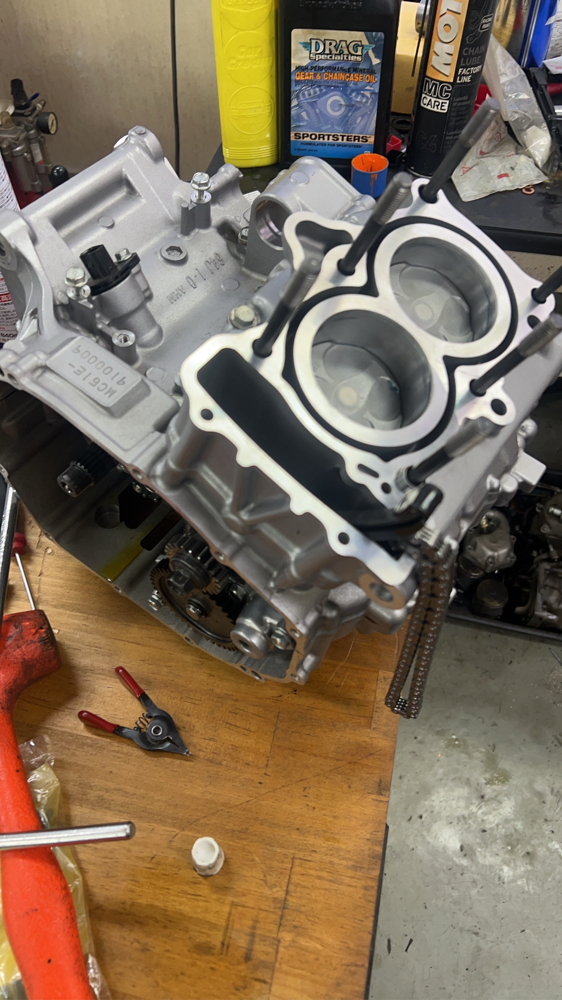
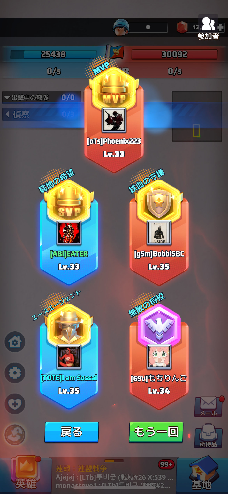
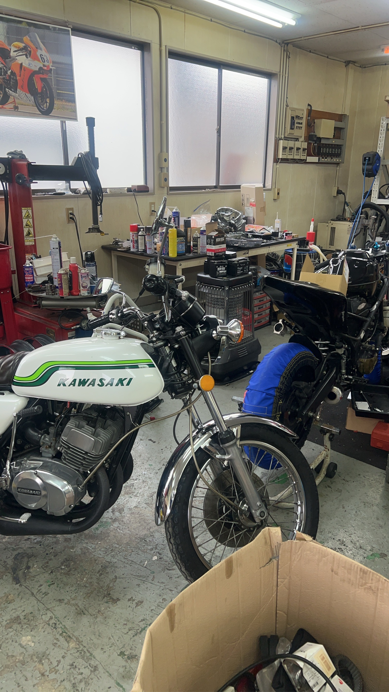
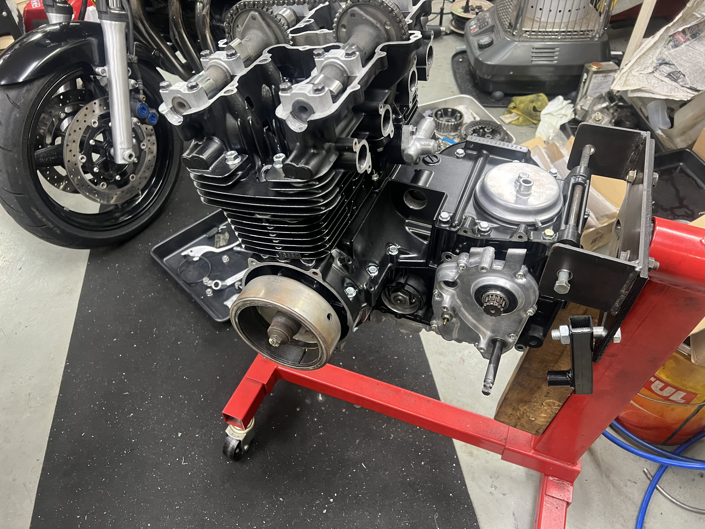
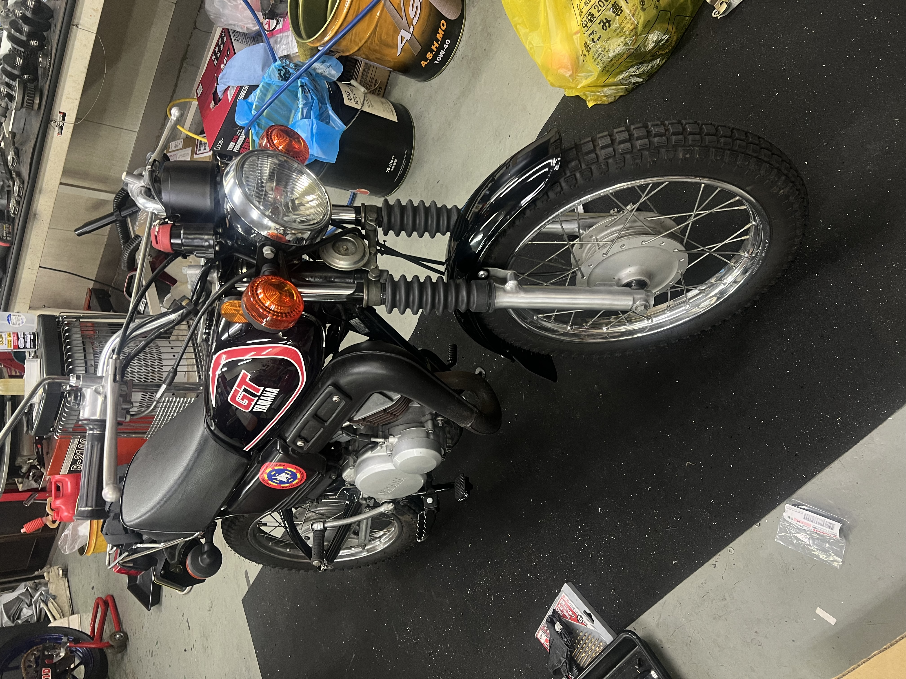
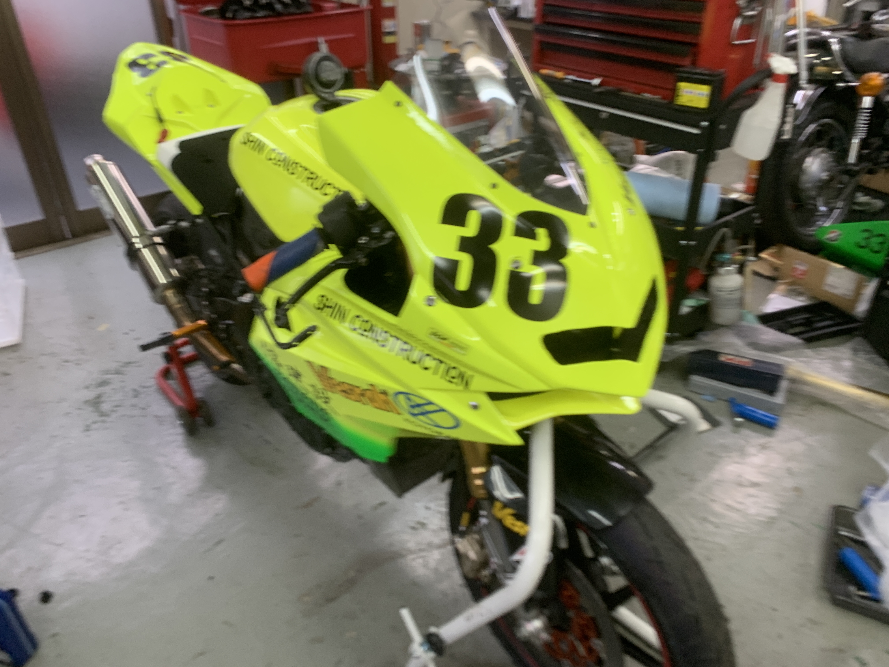
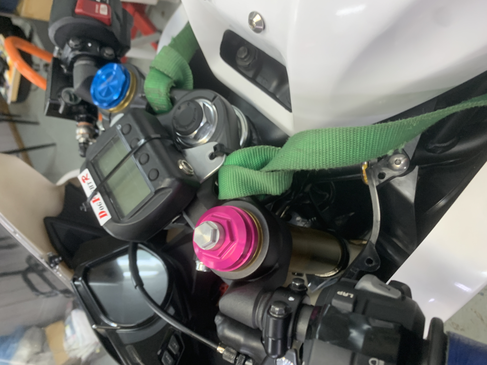

売るためではなく、
乗り続けるための整備。
バイク屋は入りづらい。
どこに修理を頼めばいいか分からない。
そんな初心者の方や、修理を断られて困っている方のための
バイク修理・整備専門ショップを目指しています。
こんなことで困っていませんか？
バイクに詳しくなくても大丈夫です。分からないことを分からないままにしない。それが私たちの考える整備です。
バイク屋に入りづらい
専門用語が分からなくても大丈夫。状態を確認しながら分かりやすく説明します。
修理を断られてしまった
年式や状態を確認し、まず「どうすれば直せるか」を考えます。
もっと乗りやすくしたい
ただ修理するだけではなく、乗る人に合わせたバイク作りを考えます。

修理には、理由がある。
なぜ壊れたのか。なぜこの調整が必要なのか。なぜこの部品を交換するのか。
一つ一つの理由を考え、バイクの状態と乗る人に合わせて整備します。
長年のバイク整備とレース現場で培った経験を、一般のライダーのバイクにも活かします。
私たちが大切にすること
原因を考える
症状だけでなく、なぜ起きているのかを考えます。
分かりやすく説明する
整備の知識がなくても理解できる説明を心掛けます。
乗る人に合わせる
体格・経験・用途に合わせ、乗りやすい一台を考えます。
販売より整備
今あるバイクを大切に乗り続けるための整備を重視します。
整備・修理の作業実績
エンジン内部から車体整備まで、状態と原因を確認しながら一台ずつ向き合います。






対応予定のサービス
車両の状態を確認したうえで必要な整備をご提案します。
点検・一般整備
オイル交換、消耗品交換、日常点検など。
故障診断・修理
エンジン・電装・足回りなど、症状から原因を確認します。
乗りやすさの改善
ライダーに合わせた調整やセッティングを考えます。
「バイク屋は怖い」から、
「ここなら聞ける」へ。
初心者でも、ベテランでも、バイクを大切にしたい気持ちは同じです。
敷居が低く、困った時に相談できる。そんなバイクショップを目指します。
お問い合わせ
現在、開業準備中のためお問い合わせ受付を停止しています。